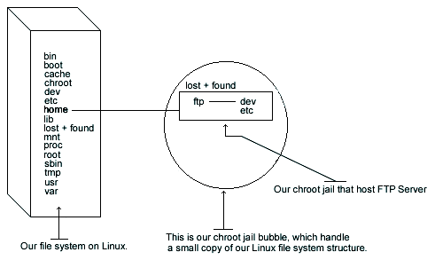

32.3. Setup a chroot user environment
What you're essentially doing is creating a skeleton root file system with enough components necessary, binaries, password files, etc. to allow Unix to do a chroot when the user logs in. Note that if you use the --enable-ls option during compilation as seen above, the /home/ftp/bin, and /home/ftp/lib directories are not required since this new option allows Wu-ftpd to use its own ls function. We still continue to demonstrate the old method for people that prefer to copy /bin/ls to the chroot'd FTP directory, /home/ftp/bin and create the appropriated library related to ls.

First create all the necessary chrooted environment directories as shown below:
[root@deep ] /# mkdir /home/ftp/dev
[root@deep ] /# mkdir /home/ftp/etc
[root@deep ] /# mkdir /home/ftp/bin |

- Require only if you are not using the --enable-ls option.

- Require only if you are not using the --enable-ls option
Change the new directories permission to 0511 for security reasons: The chmod command will make our chrooted dev, etc, bin, and lib directories readable and executable by the super-user root and executable by the user-group and all users.
[root@deep ] /# chmod 0511 /home/ftp/dev/
[root@deep ] /# chmod 0511 /home/ftp/etc/
[root@deep ] /# chmod 0511 /home/ftp/bin |
- Require only if you are not using the --enable-ls option.
- Require only if you are not using the --enable-ls option.
Copy the /bin/ls binary to /home/ftp/bin directory and change the permission of the ls program to 0111. You don't want users to be able to modify the binaries:
[root@deep ] /# cp /bin/ls /home/ftp/bin
[root@deep ] /# chmod 0111 /bin/ls /home/ftp/bin/ls
This step is necessary only if you're not using the --enable-ls option during the configure time of Wu-ftpd. See the Compile and Optimize section in this chapter for more information.- Require only if you are not using the --enable-ls option.
- Require only if you are not using the --enable-ls option.
Find the shared library dependencies of the ls Linux binary program:
[root@deep ] /# ldd /bin/ls
- Require only if you are not using the --enable-ls option.
libc.so.6 => /lib/libc.so.6 (0x00125000) /lib/ld-linux.so.2 =7gt; /lib/ld-linux.so.2 (0x00110000)Copy the shared libraries identified above to your new lib directory under /home/ftp directory:
[root@deep ] /# cp /lib/libc.so.6 /home/ftp/lib/
[root@deep ] /# cp /lib/ld-linux.so.2 /home/ftp/lib/
- Require only if you are not using the --enable-ls option
- Require only if you are not using the --enable-ls option

These library are needed to make ls work. Also, steps 3 and 4 above are required only if you want to use the ls Linux binary program instead of the --enable-ls option that uses the new internal ls capability of Wu-ftpd.
Create your /home/ftp/dev/null file:
[root@deep ] /# mknod /home/ftp/dev/null c 1 3 [root@deep ] /# chmod 666 /home/ftp/dev/nullCopy the group and passwd files in /home/ftp/etc directory. This should not be the same as your real ones. For this reason, we'll remove all non FTP users except for the super-user root in both of these files, passwd and group.
[root@deep ] /# cp /etc/passwd /home/ftp/etc/ [root@deep ] /# cp /etc/group /home/ftp/etc/Edit the passwd file, vi /home/ftp/etc/passwd and delete all entries except for the super-user root and your allowed FTP users. It is very important that the passwd file in the chroot environment has entries like:
root:x:0:0:root:/:/dev/null ftpadmin:x:502:502::/ftpadmin/:/dev/null :
We can notice two things here: first, the home directory for all users inside this modified passwd file are now changed to reflect the new chrooted FTP
directory i.e. /home/ftp/./ftpadmin/ begins /ftpadmin/, and also, the name of the user's login
shell for the root account has been changed to /dev/null.
:
We can notice two things here: first, the home directory for all users inside this modified passwd file are now changed to reflect the new chrooted FTP
directory i.e. /home/ftp/./ftpadmin/ begins /ftpadmin/, and also, the name of the user's login
shell for the root account has been changed to /dev/null.
Edit the group file, vi /home/ftp/etc/group and delete all entries except for the super-user root and all your allowed FTP users. The group file should correspond to your normal group file:
root:x:0:root ftpadmin:x:502:
Now we must set passwd, and group files in the chroot jail directory immutable for better security.
[root@deep ] /# cd /home/ftp/etc/ [root@deep ] /# chattr +i passwdSet the immutable bit on group file:
[root@deep ] /# cd /home/ftp/etc/ [root@deep ] /# chattr +i group